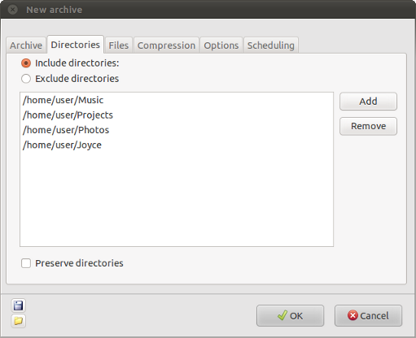

Creating archives: Directory options
The "Directories" tab of the "New archive" window allows you to decide which directories will be included in the archive.

If you want to archive files from all the directories inside your
base directory then you will not need to enter anything on this page.
If, however, you want to ignore some directories then you will have to either enter the ones that you want to include or those that you want to exclude, whichever is most convenient.
There are two options for deciding which directories will be archived: you have to choose the one that is most convenient.
- Include directories - This option is useful if you
only wish to archive a small number of subdirectories of the base
directory. Use the Add button to add all the directories inside your
base directory that you want to include in the archive. More than one
directory can be selected at a time, by holding the Alt or Ctrl keys
when selecting directories. All directories must be subdirectories of
the base directory or an error will occur when Dar is creating the
archive.
The Remove button can be used to remove unwanted directories from the list.
- Exclude directories - Use this option to exclude a
small number of directories. Use the Add button to add all the
directories inside your base directory that you do not want included in
the archive. More than one directory can be selected at a time, by
holding the Alt or Ctrl keys when selecting directories. All
directories must be subdirectories of the base directory or an error
will occur when Dar is creating the archive.
The Remove button can be used to remove unwanted directories from the list.
Additional option:
- Preserve directories - If this option is selected
then placeholders for all subdirectories of the base directory which
are not included in the backup will be saved, but without their
contents.